교통기사 (2016-10-01 기출문제)
1과목: 교통계획
1. 편익/비용의 값이 얼마일 때 해당 사업이 경제적 타당성이 있다고 보는가?
- 1보다 클 때
- 0보다 클 때
- 1보다 작을 때
- 0보다 작을 때
(정답률: 85%)

2. 통행자의 사회ㆍ경제적 욕구를 만족시키기 위해 부수적으로 발생하는 통행수요의 특성을 나타내는 용어는?
- 초과수요
- 파생수요
- 전환수요
- 결합수요
(정답률: 81%)
3. 의존통행자가 이용할 가능성이 가장 낮은 교통수단은?
- 기차
- 버스
- 택시
- 승용차
(정답률: 82%)
4. 통행배정에 대한 내용으로 옳지 않은 것은?
- 개별형태모형의 유형과 같다.
- 4단계 추정법의 마지막 단계이다.
- 정태적 모형, 확률적 모형, 동태적 모형으로 구분할 수 있다.
- 기종점 간 교통수단별로 배분된 통행을 도로망의 한 노선에 배정하는 단계이다.
(정답률: 39%)
5. 버스 공동배차제의 유형이 아닌 것은?
- 노선공동관리
- 지역공동관리
- 차량공동관리
- 수입금공동관리
(정답률: 40%)
6. 로짓모형과 프로빗모형에 대한 설명으로 옳은 것은?
- 로짓모형은 이항모형이고 프로빗모형은 다항모형이다.
- 로짓모형은 통합모형이고 프로빗모형은 개별행태모형이다.
- 로짓모형은 오차항이 와이블분포를 따르고 프로빗모형은 오차항이 정규분포를 따른다고 가정한다.
- 로짓모형은 비관련 대안 간의 독립성과 관련한 문제가 없지만, 프로빗모형은 자유로운 상관관계를 허용하지 않는다.
(정답률: 62%)
7. 경제성 분석에서 사용되는 순현재가치의 산출 공식은?(단, t년도의 편익은 Bt , t년도의 비용은 Ct, 할인율은 r, 교통사업 분석 기간은 N년)
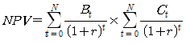
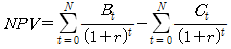
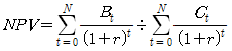
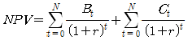
(정답률: 74%)
8. 교통계획의 경제성 분석 방법인 편익ㆍ비용비 방법의 장점으로 거리가 먼 것은?
- 분석 결과를 이해하기 쉽다.
- 사업의 규모를 고려할 수 있다.
- 할인율을 모르더라도 사업의 수익성을 측정할 수 있다.
- 편익ㆍ비용이 발생하는 시간에 대한 고려가 가능하다.
(정답률: 67%)
9. 보행자 시설의 보행교통류율, 보행속도, 보행자 점유공간, 보행밀도의 관계식으로 적합한 것은? (단, V : 보행교통류율(인/분/m), S : 보행속도(m/분), D : 보행밀도(인/m2), M : 보행점유공간(m2/인))
- V = S × D
- V = S ÷ D
- V = M × S
- V = M ÷ S
(정답률: 79%)
10. 중력모형을 통해 통행분포를 예측하는 과정에서 필요한 자료로 적합하지 않은 것은?
- 목표연도의 통행발생량
- 기준년도의 존간 통행시간
- 기준년도의 기종점 간 통행량
- 목년도의 존별 유입통행량과 유출통행량
(정답률: 28%)
11. 주차수요 추정방법이 아닌 것은?
- P요소법
- 원단위법
- 프라타모델법
- 과거 추세 연장법
(정답률: 77%)
12. 교통시설물 조사에 포함되는 항목이 아닌 것은?
- 교차로
- 주차시설
- 서비스 수준
- 대중교통 노선
(정답률: 59%)
13. 다음 ( ) 안에 해당하는 것은?
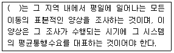
- O-D 조사
- 회전교통량 조사
- 승하차 인원수 조사
- 가로구간 교통량 조사
(정답률: 87%)
14. 일방통행제에 대한 설명으로 옳지 않은 것은?
- 교통 안내 표지판 수가 증가한다.
- 도로면 토지이용의 증대가 기대된다.
- 전반적인 대중교통용량을 감소시킨다.
- 차량의 통행거리를 단축하는 효과가 있다.
(정답률: 75%)
15. 내부수익률에 대한 설명으로 옳지 않은 것은?
- 다른 대안과 비교하기 쉽다.
- 사업의 수익성을 측정할 수 있다.
- 평가과정과 결과를 이해하기 쉽다.
- 사업의 절대적인 규모를 고려할 수 있다.
(정답률: 87%)
16. 교통의 기능과 가장 관계가 없는 것은?
- 도시 간, 지역 간의 교류 촉진
- 생산성 제고 및 생산비 증대에 기여
- 도시화를 촉진시키고 도시 간 유기적 연결
- 승객과 화물을 일 정 시간에 목적지까지 운송
(정답률: 84%)
17. 주행중인 차량이 다른 차량 또는 도로시설과 실시간으로 통신을 하여 위험요소를 서로 공유하여 사고를 예방할 수 있는 차세대 지능형 교통체계는?
- A-ITS
- C-ITS
- S-ITS
- T-ITS
(정답률: 74%)
18. 장ㆍ단기 교통계획의 차이점에 대한 설명이 옳지 않은 것은?
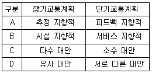
- A
- B
- C
- D
(정답률: 86%)
19. 폐쇄선 설정 시 고려할 사항으로 옳지 않은 것은?
- 폐쇄선을 가급적 행정구역 경계선과 일치시킨다.
- 주변에 동이 위치하면 폐쇄선 내에 포함하도록 한다.
- 폐쇄선을 횡단하는 도로나 철도가 가급적 최소가 되게 한다.
- 도시 주변에 인접한 위성도시나 장래 도시화 지역은 가급적 폐쇄선 내에 포함시키지 않는다.
(정답률: 79%)
20. 어느 버스의 차량당 재차인원이 60명, 차량의 용량이 45명일 때 혼잡률은?
- 약 33%
- 약 42%
- 약 75%
- 약 133%
(정답률: 55%)
2과목: 교통공학
21. 20/20의 시력을 가진 운전자가 80m의 거리에서 글자의 크기가 15cm인 교통표지판을 읽을 수 있다면 20/50의 시력을 가진 운전자가 글자 크기가 동일한 표지판을 읽기 위해 필요한 거리는?
- 32m
- 36m
- 40m
- 48m
(정답률: 72%)
22. 어느 연속교통류의 속도(V : km/시)와 밀도(D : 대/km)의 관계식이 V=60-0.3D일 때 최대 교통량은?
- 2,100대/시
- 2,351대/시
- 2,745대/시
- 3,000대/시
(정답률: 61%)
23. 속도-밀도 모형에 대한 설명으로 옳은 것은?
- Greenberg의 식에 의하면 밀도가 최대가 되면 속도는 최대 속도의 1/2이 된다.
- Greenshield의 직선모형은 사용하기가 간편하며 밀도가 매우 높거나 낮은 경우에도 직선관계가 나타난다.
- Greenberg의 로그모형은 밀도가 높은 부분에서 정확한 관계를 추출할 수 있으나, 밀도가 낮은 경우 속도를 밀도로 설명하기 힘들어진다.
- Underwood의 지수모형은 밀도가 높은 경우 속도를 정확히 산출하기 때문에 고속에서의 속도 추정값이 현장 측정값과 동일하게 나타난다.
(정답률: 48%)
24. 신호교차로가 90초의 주기로 운영되고 임계차로군의 교통량비의 합이 0.72일 때 교차로 전체의 임계 V/C 비 값으로 0.76을 얻었다. 이 교차로의 매 주기당 총 손실시간은?
- 약 3초
- 약 5초
- 약 7초
- 약 9초
(정답률: 57%)
25. 신호교차로의 용량분석 시 적용되는 이상적인 조건이 아닌 것은?
- 차로폭 3m 이상
- 경사가 없는 접근부
- 측방여유폭 1.5m 이상
- 교통류는 직진이며 모두 승용차로 구성
(정답률: 53%)
26. 교통량, 속도, 밀도의 관계식에서 사용되는 속도의 종류는?
- 설계속도
- 지점속도
- 공간평균속도
- 시간평균속도
(정답률: 72%)
27. 도로의 일정지점을 통과하는 차량을 15초 단위로 분석한 결과 평균이 1.7대, 분산이 1.8대이었다. 해당 지점을 통과하는 차량이 2대 이하로 도착할 확률은?
- 약 67.1%
- 약 71.2%
- 약 73.5%
- 약 75.7%
(정답률: 56%)
28. 차량의 미끄럼 마찰계수에 영향을 주지 않는 것은?
- 타이어 상태
- 노면습윤 상태
- 운전자 반응시간
- 도로 포장면 재질
(정답률: 70%)
29. 신호교차로의 특정 접근로에서 차량의 접근속도는 45km/h, 감속도 4.4m/s2, 교차로의 폭원 26m, 차량의 길이가 6m일 때 이 접근로에 대한 적절한 황색신호 시간은? (단, 운전자의 반응시간은 1초로 가정)
- 3초
- 4초
- 5초
- 6초
(정답률: 68%)
30. 차량 V1, V2, V3의 운행을 보여주는 시공도로부터 알 수 없는 것은?
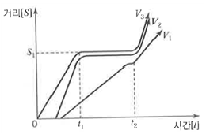
- V1과 V2는 차량군을 이루고 있다.
- V3는 적색신호를 위반하고 계속 주행하였다.
- S1지점에 신호화된 교차로가 있을 가능성이 있다.
- t1부터 t2 사이에는 이들 차량운행 방향에 적색신호가 있었을 가능성이 있다.
(정답률: 72%)
31. Car-folloeing 모형에서 운전자의 가ㆍ감속에 영향을 미치는 요소에 포함되지 않는 것은?
- 반응민감도
- 차량의 길이
- 앞차와의 간격
- 앞차와의 속도차
(정답률: 70%)
32. 교통공학에서 사용되는 확률분포를 계수분포와 간격분포로 구분할 때 계수분포에 해당하지 않는 것은?
- 이항분포
- 포아송분포
- 초기하분포
- 음지수분포
(정답률: 58%)
33. 정주기신호에 비하여 교통감응식신호가 갖는 장점이 아닌 것은?
- 설치비가 낮고 유지관리가 용이하다.
- 일간 교통상황의 예측이 어려운 교차로에서 효과적일 수 있다.
- 하루 중에서 잠시 동안만 신호설치의 준거에 도달하는 곳에 사용하면 좋다.
- 일반적으로 독립교차로에서 특히 교통량의 시간별 변동이 심할 때 사용하면 교차로 지체를 줄일 수 있다.
(정답률: 71%)
34. 신호 교차로에서 주기를 결정할 때 고려해야 할 요소가 아닌 것은?
- 밀도
- 교통량
- 첨두시간계수
- 보행자 횡단시간
(정답률: 45%)
35. PHF(Peak Hour Factor)에 대한 설명으로 틀린 것은?
- 보통 1보다 큰 값을 가진다.
- 첨두시간 내에서 교통량의 변동 정도를 알 수 있다.
- 교통류 분석 시간 단위가 15분보다 짧으면 PHF는 작아진다.
- 분석 시간 단위를 짧게 하면 교통시설의 규모를 결정할 때 과다설계가 될 가능성이 있다.
(정답률: 79%)
36. 교통량과 밀도에 대한 설명이 틀린 것은?
- 밀도는 차두거리에 비례한다.
- 밀도의 증가에 따라 교통량은 증가 후 감소한다.
- 교통량이 최대가 될 때의 밀도를 임계밀도라 한다.
- 모든 움직임이 정지된 상태의 밀도를 혼잡밀도라 한다.
(정답률: 60%)
37. TSM(Transportation System Management)의 특징 또는 기본요건이라 볼수 없는 것은?
- 계획과 시행이 단기적일 것
- 투자 및 운영비용이 저렴할 것
- 기존시설을 최대한 이용할 것
- 다양수단, 도로망, 선형 대안을 제시할 것
(정답률: 74%)
38. 도로시설과 각 시설별 효과척도의 연결이 틀린 것은?
- 2차로 도로 - 총 지체율
- 신호교차로 - 평균제어지체
- 다차로도로 - 평균통행속도
- 고속도로 엇갈림 구간 - 주행속도
(정답률: 69%)
39. 중차량에 대한 설명으로 틀린 것은?
- 도로의 최대서비스유율을 감소시킨다.
- 오르막길의 경우 중차량의 영향은 더욱 커진다.
- 중차량의 승용차 환산계수는 지형에 관계없이 일정하다.
- 감속, 가속, 속도 유지 등 차량운행 능력이 일반적으로 승용차보다 떨어진다.
(정답률: 86%)
40. 다음 그림은 Greenshields의 속도-밀도 모형에서 유도된 교통량(Q)과 밀도(K)의 관계를 나타낸 것이다. 관계식으로 옳은 것은? (단, uf= 자유류의 속도)
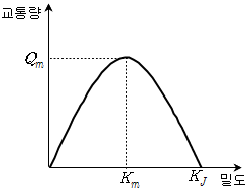
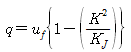
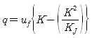
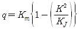
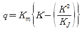
(정답률: 47%)
3과목: 교통시설
41. 도로의 교통수요예측결과 목표연도의 AADT가 3,200대/일이면 중방향 설계시간 교통량은? (단, 도로의 첨두시간 집중률은 7%, K30은 13%, 양방향 교통량에 대한 중방향 교통량의 백분율이 65%임)
- 270대/일
- 270대/시
- 290대/일
- 290대/시
(정답률: 35%)
42. 과속방지시설의 설치장소에 관한 설명으로 옳지 않은 것은?
- 도로의 굴곡부나 곡선반경이 작은 곳, 또는 시거가 불량한 교차로 등에 설치한다.
- 자동차의 통행속도를 30km/h 이하로 제한할 필요가 있다고 인정되는 도로에 설치한다.
- 보ㆍ차도의 구분이 없는 도로로서 보행자가 많거나 어린이의 놀이로 교통사고 위험이 있다고 판단되는 도로에 설치한다.
- 학교 앞, 유치원, 어린이 놀이터, 근린공원, 마을 통과 지점 등으로 자동차의 속도를 저속으로 규제할 필요가 있는 구간에 설치한다.
(정답률: 73%)
43. 설계구간에 대한 설명으로 옳지 않은 것은?
- 가급적 길이가 길수록 바람직하다.
- 고속도로의 경우 최소 설계구간의 길이는 5km이다.
- 인접한 설계구간의 설계속도의 차이는 20km/h 이상이 되도록 하여야 한다.
- 노선의 성격이나 중요성, 교통량, 지형 및 지역이 비슷한 구간에서는 동일한 설계구간이 되도록 한다.
(정답률: 62%)
44. 평면교차로에서의 도류화 설계를 위한 기본원칙에 대한 설명으로 틀린 것은?
- 운전자가 한 번에 한 가지 이상의 의사결정을 하지 않도록 해야 한다.
- 운전자의 인지성 확보를 위해 교통섬 내에 식수 등을 하도록 한다.
- 회전차량의 대기장소는 직진교통으로부터 잘 보이는 곳에 위치해야 한다.
- 필요 이상의 교통섬을 설치하는 것은 피해야 하며, 원칙적으로 도류화가 필요하더라도 좁은 면적에서는 이를 피해야 한다.
(정답률: 66%)
45. 길이 1,000m 이상의 터널 또는 지하차도에서 오른쪽 길어깨의 폭을 2m 미만으로 하는 경우에는 최소 얼마의 간격으로 비상주차대를 설치하여야 하는가?
- 250m
- 500m
- 750m
- 1,000m
(정답률: 74%)
46. 한 차량이 곡선반경 300m인 평면곡선부를 100km/h의 속도로 주행하며 도로에서의 횡방향 마찰계수가 0.212일 때, 차량이 미끄러지지 않기 위한 최대편경사는?
- 약 3%
- 약 5%
- 약 6%
- 약 8%
(정답률: 80%)
47. 도로가 제공하는 2가지 기능의 배분과 도로기능에 따라 도로를 구분한 아래에서 A, B에 들어갈 내용이 모두 옳은 것은?
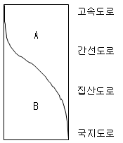
- A - 접근성, B - 이동성
- A - 이동성, B - 접근성
- A - 효율성, B - 이동성
- A - 접근성, B - 효율성
(정답률: 79%)
48. 도로의 가종 시설 기준이 틀린 것은?
- 보도의 유효 폭은 최소 2.0m로 한다.
- 도시지역 일반도로의 중앙분리대 최소 폭은 2.0m이다.
- 도시지역 고속도로 차로의 폭은 3.5m 이상으로 한다.
- 도시지역 고속도로의 차도 오른쪽 길어깨의 최소 폭은 2.0m이다.
(정답률: 70%)
49. 운전자의 시선을 유도하고 옆 부분의 여유를 확보하기 위하여 중앙분리대 또는 길어깨에 차도와 동일한 횡단경사와 구조로 차도에 접속하여 설치하는 부분은?
- 측대
- 교통섬
- 분리대
- 연결로
(정답률: 76%)
50. 지방지역 고속도로 중앙분리대의 최소 폭 기준은?
- 1.0m 이상
- 1.5m 이상
- 2.0m 이상
- 3.0m 이상
(정답률: 35%)
51. 도로의 구분에 따른 설계기준자동차가 아닌 것은?
- 트레일러
- 대형자동차
- 승용자동차
- 세미트레일러
(정답률: 76%)
52. 전진주차 방법만 채용되고 차로폭은 작아도 되나 차로 진행방향으로 긴 주차폭이 필요하고 1대당 주차면적이 최대인 각도 주차방식은?
- 30°주차
- 45°주차
- 60°주차
- 90°주차
(정답률: 68%)
53. 평면곡선부에 완화곡선을 설치할 경우 발생하는 장점으로 옳지 않은 것은?
- 도로의 설계속도를 증진시킨다.
- 일정한 주행속도 및 주행궤적을 유지시킨다.
- 선형을 시각적으로 원활하게 보이도록 한다.
- 확폭이 필요한 경우 평면곡선부의 확폭된 폭과 표준횡단의 폭을 자연스럽게 접속시킬 수 있다.
(정답률: 74%)
54. 어느 주차장의 주차첨두시간 동안의 주차 수요는 98대, 평균주차시간은 1.32시간으로 추정된다. 주차첨두시간의 평균점유율을 0.85로 할 때 소요 주차면수는?(단, 주차첨두시간은 11:00 ~ 13:00임)
- 약 51면
- 약 56면
- 약 71면
- 약 76면
(정답률: 50%)
55. 도로와 철도가 평면교차하는 경우 교차각은 최소 얼마 이상을로 하여야 하는가?
- 15°
- 30°
- 45°
- 60°
(정답률: 84%)
56. 도시지역 일반도로의 설계속도가 70km/h이상인 경우 차로의 최소 폭 기준은?
- 2.75m 이상
- 3.00m 이상
- 3.25m 이상
- 3.50m 이상
(정답률: 48%)
57. 노면의 종류에 따른 횡단경사 기준이 틀린 것은? (단, 편경사가 설치되는 구간은 고려하지 않음)
- 비포장도로 : 3.0% 이상, 6.0% 이하
- 간이포장도로 : 2.0% 이상 4.0% 이하
- 시멘트 포장도로 : 1.0% 이상, 1.5% 이하
- 아스팔트 포장도로 : 1.5% 이상, 2.0% 이하
(정답률: 74%)
58. 버스정류장의 설치장소에 대한 설명으로 옳지 않은 것은?
- 고속도로, 도시고속도로, 주간선도로에 설치한다.
- 버스의 이용 횟수, 승하차 인원, 승하차 소요시간 등을 고려하여 설치한다.
- 보조간선도로에는 본선의 교통류가 버스정차로 인해 혼란이 야기될 우려가 있는 경우에 설치한다.
- 버스정류소를 설치한 경우 도로의 예상서비스 수준이 설계 서비스 수준보다 높은 경우 설치한다.
(정답률: 49%)
59. 평면선형과 종단선형을 조합할 경우 설계 시 유의사항으로 거리가 먼 것은?
- 도로환경과의 조화를 고려할 것
- 선형이 시각적 연속성을 확보할 것
- 노면의 배수가 적절히 되는 경사를 고려할 것
- 같은 방향으로 굴곡하는 두 곡선 사에 짧은 직선을 삽입할 것
(정답률: 76%)
60. 평면 교차로의 종류가 아닌 것은?
- Y형 교차로
- T형 교차로
- 회전 교차로
- 클로버형 교차로
(정답률: 75%)
4과목: 도시계획개론
61. 집단생잔법(Cohort Survival Method)으로 인구를 예측할 때 고려하지 않아도 되는 것은?
- 사망률
- 출산율
- 한계인구
- 전입, 전출률
(정답률: 64%)
62. 용도지구에서 고도지구를 지정하는 이유는?
- 건폐율의 규제
- 건축물의 높이 제한
- 건축물의 용도 제한
- 상업 및 업무지구 조성
(정답률: 60%)
63. 건폐율에 대한 설명으로 틀린 것은?
- 대지면적에 대한 건축면적의 비율을 의미한다.
- 거주환경의 쾌적성과 안전성 등의 확보를 위한 공지의 조성이 목적이다.
- 건폐율 적용의 최대한도는 국토의 계획 및 이용에 관한 법률에서 정한 기준에 따른다.
- 대지에 둘 이상의 건축물이 있는 경우에는 이들 중 큰 규모의 건축물의 건축면적을 적용한다.
(정답률: 67%)
64. 케빈 린치(Kevin Lynch)가 주장한 도시 이미지의 5가지 구성요소에 해당하는 것은?
- 의미(Meaning)
- 구조(Structuer)
- 정체성(Identity)
- 상징물(Landmark)
(정답률: 63%)
65. 토지이용 입지배분의 기본원칙과 거리가 먼 것은?
- 환경친화적인 입지 배분
- 도시 성장 위주의 입지 배분
- 교통망과 조화를 이루는 입지 배분
- 도시의 특성과 도시상에 부합하는 입지 배분
(정답률: 56%)
66. 그리스의 도시국가에 대한 설명으로 옳지 않은 것은?
- 히포다무스는 격자형 도로망을 발전시켰다.
- 아테네는 가장 발달한 대표적인 도시국가였다.
- 시가지에 위치한 포럼은 종교적인 중심지가 되었다.
- 대부분의 도시민 주택은 폐쇄형으로 중정을 향해 배치되었다.
(정답률: 72%)
67. 도시ㆍ군기본계획을 수립하여야 하는 자로 옳지 않은 것은?
- 군수
- 면장
- 특별시장
- 특별자치도지사
(정답률: 82%)
68. 도시 및 주거환경정비법에 따라 정비기반 시설은 양호하나 노후ㆍ불량건축물이 밀집한 지역에서 주거환경을 개선하기 위하여 시행하는 사업은?
- 주택재건축사업
- 주택재개발사업
- 주거환경관리사업
- 도시환경정비사업
(정답률: 35%)
69. 도지이용계획에 있어서 순밀도 계산으로 옳은 것은?
- 거주인구/주택부지
- 거주인구/지구총면적
- 거주인구/(택지+공공공익시설용지)
- 거주인구/(택지+공공공익시설용지+농림지)
(정답률: 55%)
70. 샤핀(F.S. Chapin)이 제시한 토지이용의 결정요인 중 공공 이익의 요소에 해당하지 않는 것은?
- 쾌적성
- 보건성
- 편리성
- 균일성
(정답률: 54%)
71. 국토교통부장관이 도시의 무질서한 확산을 방지하고 도시주변의 자연환경을 보전하여 도시민의 건전한 생활환경을 확보하기 위하여 도시의 개발을 제한할 필요가 있다고 인정되어 도시ㆍ군관리계획으로 결정할 수 있는 것은?
- 개발제한구역
- 시가화조정구역
- 도시자연공원구역
- 특정시설제한구역
(정답률: 65%)
72. 힐 호스트(O. Hilhost)의 지역 구분에 해당하지 않는 것은?
- 결절지역(nodal area)
- 계획권역(planning region)
- 분극지역(polarized region)
- 동질지역(homogeneous area)
(정답률: 34%)
73. 공공기관 지방 이전을 계기로 성장 거점지역에 조성되는 미래형 도시로, 이전된 공공기관과 지역의 대학, 연구소, 산업체, 지방자치단체가 협력하여 새로운 성장 동력을 창출하는 기반이 되는 것은?
- 혁신도시
- 스마트시티
- 기업복합도시
- 행정중심복합도시
(정답률: 53%)
74. 도시의 내부 구조를 설명하는 이론이 아닌 것은?
- 선형이론
- 동심원이론
- 다핵심이론
- 중심지이론
(정답률: 60%)
75. 래드번(Radburn) 계획에 대한 설명으로 옳지 않은 것은?
- 슈퍼블록(Superblock)을 채택하였다.
- 쿨데삭(Cul-de-sac)형 세로가로망을 배치한다.
- 수평적인 보행 및 차량통합 보도망을 형성하였다.
- 라이트(H.Wright)와 스타인(C.Stein)이 계획하였다.
(정답률: 40%)
76. 경제기반이론(Economic Base Theory)에서 기간산업(Basic Industry)을 판별하는 방법으로 가장 보편적인 것은?
- 최대고용요구량법
- 입지상(Location Quotient)
- 지역승수(Regional Multiplier)
- 산업연관표(input-output Table)
(정답률: 61%)
77. 가도시화 현상에 대한 설명으로 옳은 것은?
- 몇 개의 대도시와 그 주변 도시들이 융합되는 도시화 현상
- 대도시 중심부의 기능이 약화되어 도시의 공간구조가 도시 주변 지역 중심으로 바뀌는 현상
- 도시의 부양능력에 비해 지나치게 많은 인구가 도시에 집중하여 인구만 비대해진 도시화 현상
- 낙후 지역의 효과적인 개발을 위해 잠재력이 큰 지점이나 지방도시에 대한 집중 투자로 발생하는 도시화 현상
(정답률: 62%)
78. 도시토지이용의 예측 모형인 라우리모형(Lowry Model)에서 공간구조를 분류하는 항목에 해당하지 않는 것은?
- 기반부문(Basic Sector)
- 서비스부문(Service Sector)
- 가계부문(Household Sector)
- 환경부문(Environmental Sector)
(정답률: 53%)
79. 무분별한 개발로 도시지역이 무질서하게 확산되는 현상을 무엇이라 하는가?
- 의존 효과
- 스프롤 현상
- 슬럼화 현상
- 과도시화 현상
(정답률: 63%)
80. 도시의 공간구조론 중 동심원 이론을 발표한 학자는?
- H.Hoyt
- C.D. Harris
- E.W. Burgess
- R.E. Dickinson
(정답률: 71%)
5과목: 교통관계법규
81. 안전표지의 바탕ㆍ테ㆍ문자와 기호의 색채에 대한 일반 기준이 틀린 것은?
- 보조표지 중 어린이보호구역표지의 바탕은 황색으로 한다.
- 지시표지 중 일방통행표지의 기호 부분은 청색 바탕에 백색기호로 한다.
- 규제표지 중 진입금지표지의 바탕은 황색으로, 문자 및 기호는 적색으로 한다.
- 규제표지 중 주차금지표지의 바탕은 청색으로 하고, 문자 및 기호는 백색으로 한다.
(정답률: 50%)
82. 도로법상 지방도에 해당하는 노선이 아닌 것은?
- 시청 또는 군청 소재지를 서로 연결하는 도로
- 도청 소재지에서 시청 또는 군청 소재지에 이르는 도로
- 중요 도시, 지정항만, 중요 비행장, 관광지 등을 연결하며 고속국도와 함께 국가 기간 도로망을 이루는 도로
- 도 또는 특별자치도에 있는 비행장ㆍ항만 또는 역에서 이들과 밀접한 관계가 있는 고속국도ㆍ국도 또는 지방도를 연결하는 도로
(정답률: 43%)
83. 도로법상 타 공사나 타 행위로 인하여 필요하게 된 도로공사의 비용을 타 공사나 타 행위의 비용을 부담하여야 할 자에게 그 전부 또는 일부를 부담시키는 것을 무엇이라 하는가?
- 원인자의 비용부담
- 수익자의 비용부담
- 이용자의 비용부담
- 손괴자의 비용부담
(정답률: 57%)
84. 국토교통부장관이 도시교통정비지역으로 지정ㆍ고시할 수 있는 대상 지역 기준은? (단, 도농복합형태의 시의 경우는 읍ㆍ면 지역을 제외한 지역임)
- 인구 10만 명 이상의 도시
- 인구 20만 명 이상의 도시
- 인구 30만 명 이상의 도시
- 인구 50만 명 이상의 도시
(정답률: 69%)
85. 도로교통법상 앞지르기가 금지된 장소가 아닌 것은?
- 교차로
- 터널 안
- 다리 위
- 버스정류장
(정답률: 66%)
86. 도로교통법상 원활한 교통을 확보하기 위하여 도로에 전용차로를 설치할 수 있는 설치권자는?
- 시장
- 대통령
- 경찰청장
- 국토교통부장관
(정답률: 44%)
87. 평행주차형식 외의 경우 주차장의 주차단위 구획 기준이 틀린 것은?
- 경형 : 너비 2.0m 이상, 길이 3.6m 이상
- 확장형 : 너비 2.5m 이상, 길이 5.1m 이상
- 일반형 : 너비 2.3m 이상, 길이 5.0m 이상
- 장애인 전용 : 너비 3.0m 이상, 길이 5.0m 이상
(정답률: 60%)
88. 도시교통정비 기본계획을 수립할 때 주차장의 건설 및 운영에 관한 계획에 포함될 사항이 아닌 것은?
- 주차장 설계방안
- 주차관리 정책방향
- 주차수요 예측 및 공급계획
- 주차시설 및 주차실태의 조사ㆍ분석
(정답률: 57%)
89. 교통안전법의 제정 목적과 거리가 먼 것은?
- 교통안전 증진에 이바지하기 위하여
- 교통안전에 관한 시책을 규정하기 위하여
- 교통안전에 필요한 단체를 설립ㆍ운영하기 위하여
- 교통안전에 관한 시책을 종합적ㆍ계획적으로 추진하기 위하여
(정답률: 80%)
90. 교통안전법에 따른 용어의 정의가 틀린 것은?
- 교통사고 : 교통수단의 운행ㆍ항행ㆍ운항과 관련된 사람의 사상 또는 물건의 손괴를 말한다.
- 교통수단 : 사람이 이동하거나 화물을 운송하는 데 이용되는 것으로 육상교통용에만 해당하는 모든 운송수단이다.
- 교통행정기관 : 법령에 의하여 교통수단ㆍ교통시설 또는 교통체게의 운행ㆍ운항ㆍ설치 또는 운영 등에 관하여 교통사업자에 대한 지도ㆍ감독을 행하는 지정행정기관의 장, 특별시장ㆍ광역시장ㆍ도지사ㆍ특별자치도시사 또는 시장ㆍ군수ㆍ구청장을 말한다.
- 교통시설 : 도로ㆍ철도ㆍ궤도ㆍ항만ㆍ어항ㆍ수로ㆍ공항ㆍ비행장 등 교통수단의 운행ㆍ운항 또는 항행에 필요한 시설과 그 시설에 부속되어 사람의 이동 또는 교통수단의 원활하고 안전한 운행ㆍ운항 또는 항행을 보조하는 교통안전표지ㆍ교통관제시설ㆍ항행안전시설 등의 시설 또는 공작물을 말한다.
(정답률: 66%)
91. 교통혼잡 특별관리구역과 특별관리시설물의 설치 기준이 틀린 것은? (단, 혼잡시간대란 일정한 구역을 둘러싼 편도 3차로 이상 도로 중 적어도 1개 이상의 도로의 시간대별 평균 통행속도가 시속 10km 미만인 상태를 뜻함)
- 교통혼잡 특별관리구역 - 혼잡시간대가 토ㆍ일요일과 공휴일을 제외한 평일 평균 하루 3회 이상 발생할 것
- 교통혼잡 특별관리구역 - 혼잡시간대에 그 구역으로 진입하거나 진출하는 교통량이 해당도로 한쪽 방향 교통량의 10% 이상을 차지할 것
- 교통혼잡 특별관리시설물 - 혼잡시간대에 해당도로를 통하여 해당 시설물로 진입하거나 진출하는 교통량이 그 도로 한쪽 방향 교통량의 10% 이상일 것
- 교통혼잡 특별관리시설물 - 시설물이 유발하는 교통량으로 인하여 해당 시설물의 주출입구에 접한 도로의 혼잡시간대가 시설물이 유발하는 교통량이 토ㆍ일용일과 공휴일을 포함한 주 중 가장 많은 날을 기준으로 하루 3회 이상 발생할 것
(정답률: 24%)
92. 국토교통부장관은 국가교통안전기본계획의 수립 또는 변경을 위한 지침을 작성하여 언제까지 지정행정기관의 장에게 통보하여야 하는가?
- 계힉연도 시작 전년도 6월 말까지
- 계획연도 시작 전년도 12월 말까지
- 계획연도 시작 전전년도 6월 말까지
- 계획연도 시작 전전년도 12월 말까지
(정답률: 46%)
93. 도로법에 따른 도로의 부속물에 해당하지 않는 것은?
- 교량
- 주차장
- 도로표지
- 중앙분리대
(정답률: 44%)
94. ( ) 안에 공통으로 들어갈 말로 옳은 것은?
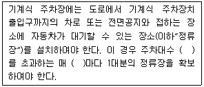
- 10대
- 20대
- 30대
- 50대
(정답률: 56%)
95. 부설주차장의 설치대상 시설물 종류 및 설치기준이 틀린 것은?
- 판매시설 : 시설면적 150m2당 1대
- 숙박시설 : 시설면적 200m2당 1대
- 방송통신시설 중 방송국 : 시설면적 150m2당 1대
- 의료시설(정신병원ㆍ요양병원 및 격리병원 제외) : 시설면적 200m2당 1대
(정답률: 50%)
96. 도로법 시행령상 도로정책심의회의 심의사항이 아닌 것은?
- 건설ㆍ관리계획의 조정에 관한 사항
- 주요 지하매설물의 안전 대책에 관한 사항
- 대도시권 교통혼잡도로 개선사업계획의 수립에 관한 사항
- 국토교통부장관이 지정ㆍ고시하는 도로 노선의 지정에 관한 사항
(정답률: 57%)
97. 도시교통정비지역으로 지정된 행정구역을 관할하는 시장이나 군수는 도시교통정비 기본계획을 몇 년 단위로 수립하여야 하는가?
- 5년
- 10년
- 20년
- 30년
(정답률: 20%)
98. 도로법에 규정된 도로의 종류에 해당하지 않는 것은?
- 군도
- 면도
- 고속국도
- 일반국도
(정답률: 71%)
99. 주차장법령상 주차전용건축물이란 건축물의 연면적 중 주차장으로 사용되는 비율이 얼마 이상인 것을 뜻하는가?
- 80%
- 85%
- 90%
- 95%
(정답률: 68%)
100. 도로교통법상의 정차에 해당하는 것은?
- 화물을 싣기 위해 계속 정지하여 있는 상태
- 운전자가 차의 바퀴를 일시적으로 완전히 정지하여 있는 상태
- 운전자가 차를 즉시 정지시킬 수 있는 정도의 느린 속도로 진행하는 상태
- 운전자가 5분을 초과하지 아니하고 차를 정지시키는 것으로서 주차 외의 정지상태
(정답률: 73%)
6과목: 교통안전
101. EPDO가 의미하는 바는?
- 등가물피사고
- 등가사망사고
- 등가중상사고
- 등가부상사고
(정답률: 74%)
102. 어떤 차량이 평탄한 도로에서 좌측 30m, 우측 28m의 직선 모양의 스키드 마크를 나타낸 후 충돌없이 정지하였다. 스키드 마크 발생 현장에서 사고차량으로 실험을 한 결과 정상적인 스키드 마크가 발생하였다면 사고차량의 제동 직전 주행속도는? (단, 타이어와 노면의 마찰계수는 0.43)
- 약 57.2km/h
- 약 61.7km/h
- 약 66.2km/h
- 약 70.7km/h
(정답률: 71%)
103. 차도를 이탈한 차량이 고정 장애물에 직접 충돌하는 것을 막기 위해 차량의 충돌 시 속도가 완만하게 줄어들도록 하거나 충돌 후 방향이 전환되도록 고안된 안전시설은?
- 가드케이블
- 과속방지시설
- 시선유도표지
- 충격흡수시설
(정답률: 67%)
104. 도로교통 안전프로그램의 내용과 가장 거리가 먼 것은?
- 노변위험 관리
- 비보호좌회전 확대
- 교차로 설계 및 통제
- 교통약자에 대한 조치
(정답률: 84%)
1⑤. 높은 좌회전 교통량으로 인한 교차로에서의 좌회전 충돌사고 많을 때의 대책으로 적절하지 않은 것은?
- 교차로의 도류화
- 연석 회전반경 개선
- 회전 유도차선 표지 설치
- 충분한 좌회전 신호 현시 부여
(정답률: 71%)
106. 전ㆍ후륜의 하중이 유사한 차량이 회전하며 곡선의 미끄럼흔적을 남겼다. 네 바퀴의 미끄럼흔적의 길이가 아래와 같을 때 이 차량의 미끄럼거리(m)는?
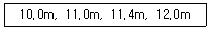
- 10.0
- 11.1
- 11.5
- 12.0
(정답률: 70%)
107. 위험지점의 선정 방법 중 사고율법 적용에 필요한 자료로 거리가 먼 것은?
- 기간
- 교통량
- 구간거리
- 도로의 유형
(정답률: 70%)
108. 사고위험이 높은 장소를 선정할 때 사용하지 않는 지표는?
- 사고율
- 총 사고건수
- 사고 피해 정도
- 사고장소의 면적
(정답률: 78%)
109. 교통사고 분석의 내용에 해당하는 것과 거리가 먼 것은?
- 개별사고의 원인분석
- 기본적인 사고통계 비교
- 사고방지 대책을 위한 예산배정
- 사고 잦은 지점의 판별 및 사고특성 파악
(정답률: 72%)
110. 교통사고 조사에서 최초접촉지점을 판정할 때에 필요한 사항으로 거리가 먼 것은?
- 스패터의 위치
- 패인 자국의 위치
- 차체의 파손 위치
- 스키드 마크가 변형된 위치
(정답률: 75%)
111. 어느 도로의 2.5km 구간의 일교통량이 3,000대이며, 이와 유사한 구간에서의 연평균 사고율이 3.79건/백만대ㆍkm일 때 이 구간의 한계 사고율은? (단, 95% 신뢰수준에서의 K값은 4.645임)(오류 신고가 접수된 문제입니다. 반드시 정답과 해설을 확인하시기 바랍니다.)
- 약 5.03건/백만대ㆍkm
- 약 5.29건/백만대ㆍkm
- 약 5.58건/백만대ㆍkm
- 약 5.91건/백만대ㆍkm
(정답률: 34%)
112. 곡선부 교통사고에 대한 설명으로 옳지 않은 것은?
- 곡선부는 미끄러짐 사고가 발생하기 쉬운 곳이다.
- 곡선부가 종단경사와 중복되는 곳은 사고의 위험성이 커진다.
- 곡선부에서의 사고를 감소시키는 방법은 운전자가 운전 시 주의하는 방법밖에 없다.
- 곡선부에서 일반적으로 사용되는 주의표지는 곡선부가 시작되는 지점 이전에“안전속도”를 표시한 “도로 굽은 표지”이다.
(정답률: 75%)
113. 교차로 사고분석에 주로 사용되는 교통사고율은?
- 인구 10만 명당 사고
- 차량 10,000대당 사고
- 진입차량 100만 대당 사고
- 통행량 1억대ㆍkm당 사고
(정답률: 67%)
114. 교통사고 발생 시 당사자들의 부상 정도가 경미하거나 대물피해만 발생한 경우에는 당사자들 간의합의나 보험처리 등으로 해결하는 경향이 강하다. 이러한 잘 보고되지 않는 사고가 교통사고다발지역분석에 미치는 영향을 최소화할 수 있는 장점을 가진 선정방법은?
- 사고율법
- 사고건수법
- 사고밀도법
- 사고심각도법
(정답률: 35%)
115. OECD가 요약한 교통안전의 진보단계 중“모든 사고에 있어 특정 사건은 부분적으로 그에 앞선 행동 또는 환경의 결과다”라는 전제하에 도로외상을 유발하는 과정을 통하여 결정적인 선 또는 경로를 찾는 방법을 개발하고자 한 것은?
- 다원인 동적 체계접근
- 다원인 정적 체계접근
- 다원인 기회현상 접근
- 단일원인 사고경향 접근
(정답률: 74%)
116. 구간거리가 24km이고 편도 4차로인 고속도로에서 1년간 사망사고 3건, 부상사고 12건, 대물피해사고가 20건이 발생하였다. 이 구간의 일평균교통량이 20,000대일 때 교통사고피해 정도에 의한 사고율은?(단, 사고 유형별 환산계수는 사망사고=20, 부상사고=5, 대물피해사고=1)
- 약 0.8
- 약 1.6
- 약 8.0
- 약 16.0
(정답률: 46%)
117. 교통사고 방지대책 대안의 검토절차로 옳은 것은?
- 빈발하는 사고유형에 새로운 대책의 적용검토-현장확인 및 검토-대책대안들의 비교 검토-교통운영의 기본요건 검토
- 현장확인 및 검토-교통운영의 기본요건 검토-빈발하는 사고유형에 새로운 대책의 적용검토-대책대안들의 비교검토
- 대책대안들의 비교검토-교통운영의 기본요건 검토-빈발하는 사고유형에 새로운 대책의 적용검토-현장확인 및 검토
- 교통운영의 기본요건 검토-빈발하는 사고유형에 새로운 대책의 적용검토-현장확인 및 검토-대책대안들의 비교검토
(정답률: 44%)
118. 지하횡단보도를 계획하는 경우가 아닌 것은?
- 도시 미관을 해칠 우려가 있는 경우
- 횡단 보행자가 극히 적은 공원을 연결하는 경우
- 횡단보도육교에 비하여 공사비ㆍ공법이 유리한 경우
- 지장물로 인해 육교의 높이가 너무 높아 이용이 곤란한 경우
(정답률: 69%)
119. 약한 지주와 강한 레일로 구성되며 충격차량을 억제하기 위하여 주로 레일요소의 작용에 의존하는 노변방호책은?
- 연성방호책
- 강성방호책
- 반강성방호책
- 초강성방호책
(정답률: 71%)
120. 누적속도분포에서 교통사고방지를 위해 제한속도를 조정하고자 최고속도 한계를 결정하는 데 많이 사용되는 기준은?
- 50% 속도
- 75% 속도
- 85% 속도
- 95% 속도
(정답률: 81%)